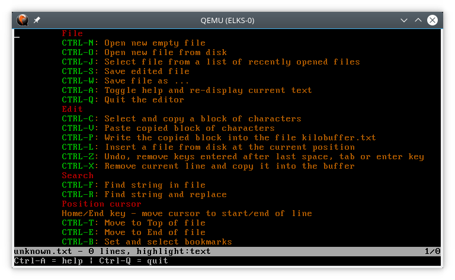

The Kilo editor
Kilo
is is an easy to use command line text editor that is included in
ELKS. Its interface is comparable to GUI-based text editors, which
makes it a good choice for those who find vi
or emacs
commands non-intuitive.
Unlike
vi,
there is no need to enter Edit Mode before inputting text; you can
begin typing as soon as the window opens. The commands supported
by Kilo are displayed on a
help page which you can open by entering CTRL+a.
The default setting is inserting the chararcters at the current cursor position and moving the following characters to the right. You can set Kilo into replace mode using the Insert key and back into insert mode by pressing this key again.
Moving the cursor
You can use the arrow keys to move the cursor in the text. You can select the Home key to move the cursor to the beginning of a line and the End key to move the cursor to the end of a line. Using the Page up and Page down keys you can scroll through the text. If you enter CTRL+t you will move to the top of the file and if you enter CTRL+e you will move to the end of the file.
Use the arrow keys to move the cursor. Or use Home and End to set it at the beginning or end of the current line. You can also use the PageUp or PageDown keys to move through the file.
Opening and Creating Files
To open an existing file or to create a new file, type kilo followed by the file name. This opens a new editor window, and you can start editing the file. If you do not supply a file name you have to specify the name when you save the file.

Syntax
Highlighting
Kilo supports syntax highlighting for c/cpp, python, go and javascript. It selects the highlighting type depending on the file suffix and displays the selected highlighting type in the status bar after loading the file. If the file type is not recognized or it is a text file, the display will be white text on a black background.
Search and Replace Text
To search for text in a document, use CTRL+f. This will open a search prompt where you can enter the search string. Kilo will jump to the first occurence of this string in the file. Use cursor-down to jump to the next occurence of this string or use cursor-up to go back up in the file to search for the string. If you press enter you will leave the search function and the cursor will stay on the same line where the string was found. If you press ESC, you will return to the location where you started the search.
If
you press CTRL+r you will be asked if you want to be prompted to
replace a string found or if you want to replace all occurences in
the file without asking. You will then be prompted for a string to
search for and a string to replace this string with. Then Kilo
will jump to the first occurence of the search string. If you
press the Home key then, you will replace the string found. If you
enter cursor-down, you will not replace the string but jump to the
next occurence.
If you selected to replace the string in the
entire file you will not be prompted to decide if you want to
replace. You can leave the replace function with Enter or ESC.
Bookmarks
To jump directly to predefined lines in the edited file, you can use up to seven bookmarks. If you enter CTRL+b, you can set, select or delete bookmarks and view the stored bookmarks. If you enter a number between 1 and 7 you can store the current line as a bookmark with that number. If a bookmark with that number has been stored already, kilo will jump to that line for you. However, if that line is the current line now and you selected the number of the bootmark used to store that line, the bookmark will be deleted. Entering ‘d‘ will clear the screen and show a list of the stored bookmarks. You can select one of these to jump to that line or delete it.
Copy and Paste
When you enter CTRL+c Kilo will allow you to select and copy a block of characters into a buffer. The current position when you enter CTRL+c is the start of the block and you can then use the cursor keys to select characters and lines to the right or below the start of this block. When you press enter the characters from the start of the block up to but not including the current cursor position will be copied into the buffer.
You can then move the cursor to a different location in the text and insert this block there using CTRL+v. If you load a new file using CTRL+o you can paste the copied line(s) into this new file. CTRL+x will delete the current line and also copy it into the buffer so you can paste it into the text at any position using CTRL+v.
You can write the contents of the copy buffer to the file kilobuffer.txt using CTRL+p. You can use CTLR+L later to insert this file anywhere into your current file.
Insert file
If you want to insert a file from disk into the file you are currently editing, enter CTRL+L and Kilo will ask you for the name of the desired file. Then it will insert the lines of that file at the current cursor position.
Undo
Kilo has a very simple undo feature. When you enter a space character, a Tab or press the Enter key in the edited text, Kilo will mark this as a beginning of an undo block. You can use CTRL+z then to erase the text from the current cursor position to the beginning of the block, e.g. the last space chararcter. Kilo willl not erase a newline that it inserted after an Enter key, it will just erase entered characters.
Save
To
save your work, use CTRL+s. This will save the document and leave
kilo running for you to continue editing.
You can also use
CTRL+w to save the file with a different name.
Open
You can load a new file when you enter CTRL+o. You will be asked whether to save your edited file to avoid discarding the modifications you made in the loaded file.
New
When you enter CTRL+n Kilo will remove the edited file and allow you to type in a new file from scratch. You will be asked to save your currently edited file to avoid discarding the modifications you made. If you copied a block of characters into the internal buffer using CTRL+c, you can use CTRL+v to enter these into the new file.
List of recently opened files
When you press CTRL+j Kilo will display a list of the files you opened recently. Kilo has saved this list on disk in the file “.kilorecent“. You will be asked to select a file from the list. Kilo will then save the currently edited file and load the selected file. It has stored the cursor position when you last used this file and will put the cursor at that position. This way you can switch quickly between several files just as if these were opened in subwindows. Using cut and paste you can copy characters from one file to the other.
 Help
If you enter CTRL+a, kilo will clear the screen and display a help page. If you press any key kilo will display the edited text again and execute the entered key. You can select a CTRL key from the list to execute that, e.g. CTRL+w to save the file under a different name. But if you want no change, just enter CTRL+a again to clear the help page.
Exit
Use CTRL+q to exit kilo. If you have not saved your work, you will be prompted to enter ‘y‘ to discard your modifications.
A screencast demonstrating Kilo is available here: https://asciinema.org/a/90r2i9bq8po03nazhqtsifksb
Development
Kilo does not depend on any library (not even curses). It uses fairly standard VT100 (and similar terminals) escape sequences.
Kilo was written by Salvatore Sanfilippo aka antirez and is released under the BSD 2 clause license. It is available on GitHub: https://github.com/antirez/kilo Here is a blog post by Salvatore Sanfilippo about the development of kilo: http://antirez.com/news/108
If
you want to get to know the code of Kilo in detail and develop
additional features for it, here is an extensive tutorial covering
the Kilo
code:
https://viewsourcecode.org/snaptoken/kilo/
https://web.archive.org/web/20200122083220/https://viewsourcecode.org/snaptoken/kilo/
Several
editors are based on Kilo, e.g. the
openemacs editor.
ELKS port of Kilo
Greg
Haerr ported Kilo to ELKS. Here is a link to his
original commit. It describes the changes that were required
to get Kilo to run with ELKS.
I looked through the
uncommitted pull requests and issues raised on the Kilo site on
GitHub and extended Kilo based on that. Debugged and rewrote
several pull requests in the process. Then I added quite a number
of additional features to Kilo.
31th of May 2020 Georg Potthast